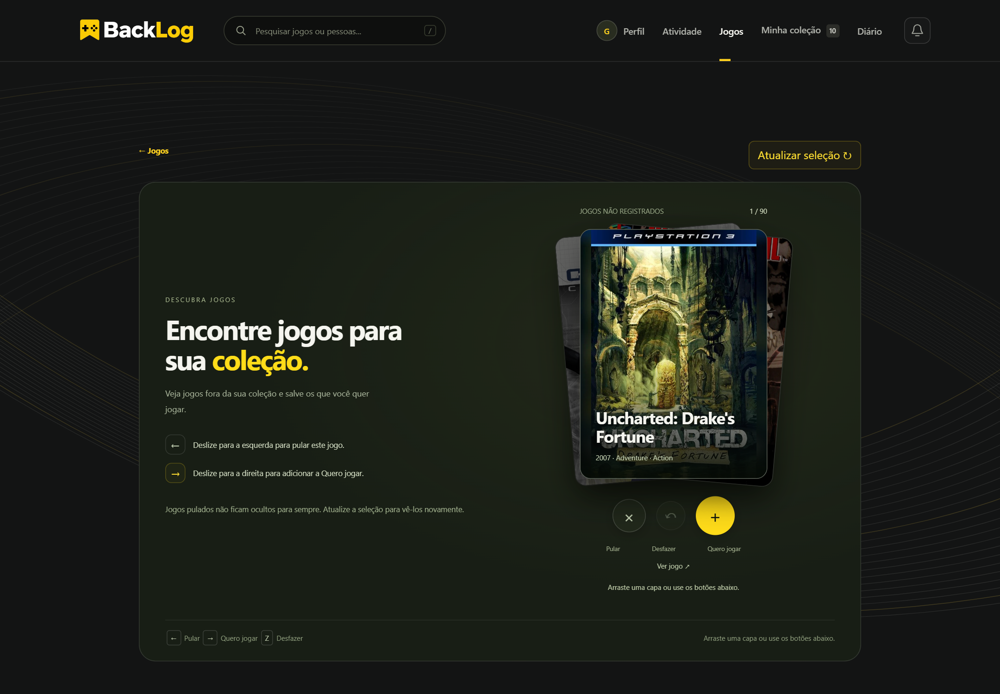

04 / ENCONTRE O PRÓXIMO
O próximo favorito
pode estar aqui.
No Discover, arraste a capa para salvar ou pular. Também dá para seguir jogadores, curtir e comentar reviews.
DISCOVER / SALVAR, PULAR E DESFAZER

← PularVeja outro jogo.
Quero jogar →Salve na sua coleção.